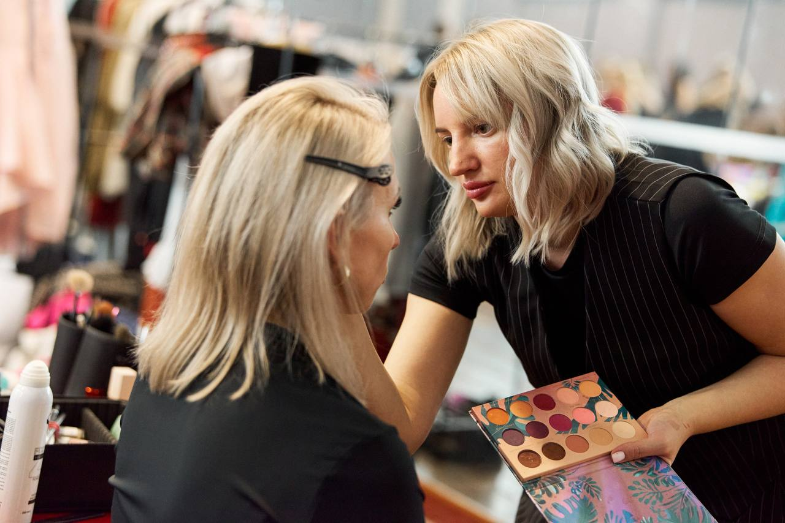

Основатель BEAUTY FRANK
Виктория
Сацевич
Эксперт в индустрии красоты • Визажист • Стилист
Сацевич Виктория Святославовна
Эксперт в индустрии красоты, визажист, стилист и основатель имидж-агентства в Красноярске
Имя Виктории Сацевич — это более 10 лет профессионального опыта, безупречный вкус, высокий уровень мастерства и глубокое понимание эстетики образа.
Её профессиональная деятельность давно вышла за рамки салонной индустрии: Виктория создаёт образы для артистов российской эстрады, сопровождает звёзд на гастролях и участвует в масштабных проектах федерального уровня.
Основатель имидж-агентства
Образ, который становится частью личного бренда
Создание имиджа — это больше, чем работа с внешностью. Это искусство формировать индивидуальность, раскрывать характер и создавать визуальный образ, который становится частью личного бренда.
Я создаю не просто макияж и образы. Я создаю впечатление, уверенность и эстетику, которая говорит сама за себя.
Профессиональный путь и достижения
Практика в разных городах и форматах
Passion Fashion и Miss & Mrs. Beauty
Ведущий визажист проектов.
Красноярск
Стилист-визажист фото- и видеопроектов.
Казань
Штатный визажист салона «ПрофКосмо» и визажист проекта «Я — модель».
Москва
Штатный мастер визажа имидж-агентства «Персона».

Федеральный и международный уровень
Проекты, формирующие опыт
В профессиональном портфолио — работа на престижных мероприятиях и проектах: «Новая волна», VK Fest, «Детское Евровидение», Fashion Volga, Bosco Fashion и других значимых событиях индустрии.
Настоящий стиль не подчиняется мимолётным трендам. Он отражает индивидуальность, подчёркивает достоинства и создаёт впечатление, которое остаётся надолго.
Проекты и сотрудничествоSelected works
Образы и детали


BEAUTY FRANK